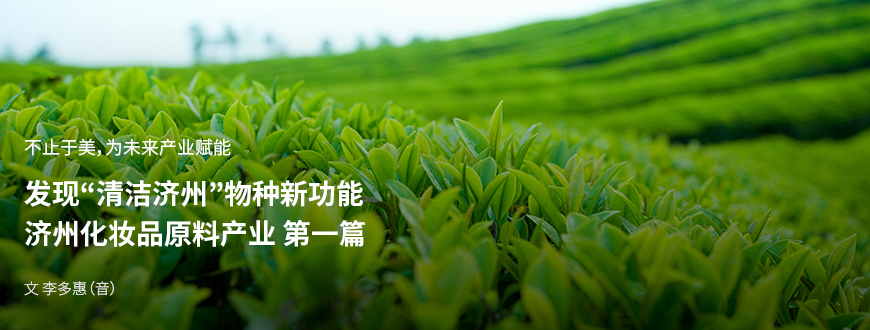
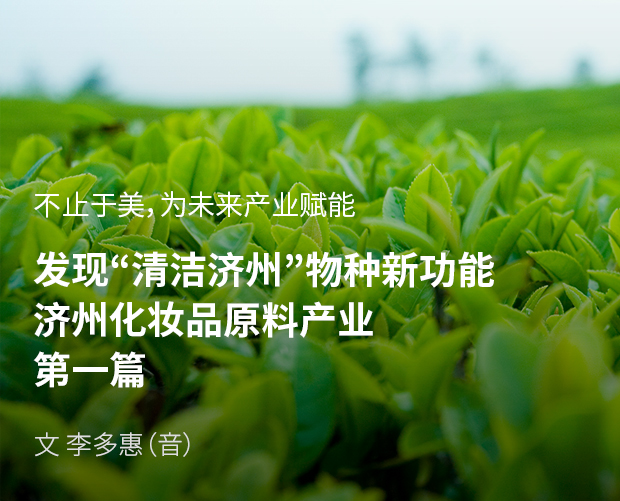
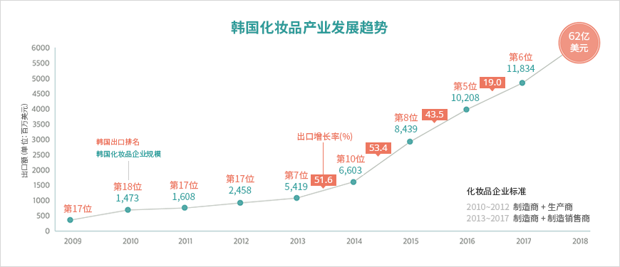
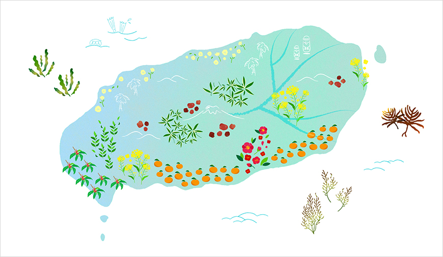
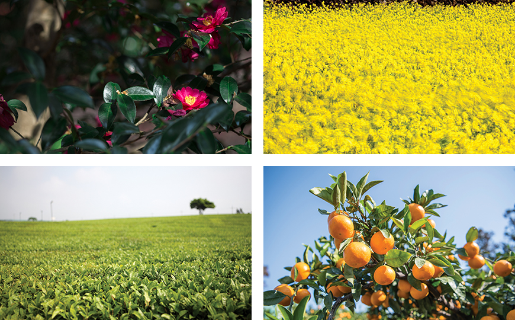
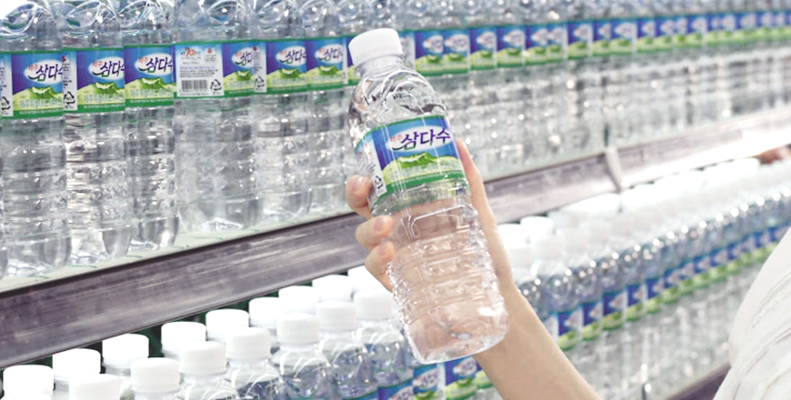

기획취재콘텐츠
- Home
- 제주라이프
- 기획취재콘텐츠
济州化妆品原料产业 第一篇새로운 글




济州被联合国教科文组织评为清洁岛屿，共有9000多种生物繁衍生息于此。火山喷发形成陆地，生命在此精彩绽放，共同组成济州的美丽大自然，同时成为未来战略产业备受瞩目的关键资源。目前韩国化妆品产业蜚声海内外，而其未来支柱正是济州的化妆品原料产业。
K-美妆发展所带来的新课题
韩国化妆品产业以雄厚的技术实力和坚实的制造业生态系统为基础，以伴随韩流热潮崛起的K-美妆品牌为优势，在人气和规模方面一枝独秀。不仅拥有全球化妆品领域前两大ODM和OEM制造商——韩国科玛和科丝美诗，还通过开发优质产品吸引全球消费者。爱茉莉太平洋和LG生活健康两家大企业共同主导韩国化妆品市场，在美国时尚杂志《WWD》评选的化妆品企业榜单中分列第12名和第17名，而Able C&C和Haveandbe等中坚企业也分别挺进第68名和第71名。此外，谜尚和菲诗小铺等实体店品牌还进一步拓展全球市场，在缝隙市场上俘获全球消费者芳心。过去二十年，韩国化妆品市场规模一直保持年均10%左右的增长势头，到2017年韩国已经成为全球第八大化妆品文化大国。



※ 资料来源：KOTRA内部统计数据（KOTRA、保健福祉部、食品医药品安全处）、韩国保健产业振兴院, Global Trade Atlas(2018. 06)
韩国化妆品产业市场连续十年保持增长。
随着韩国本土市场规模扩大，对外出口额也逐年刷新纪录。据韩国保健产业振兴院发布的《2019年化妆品产业分析报告》，2018年韩国化妆品出口额达627678万美元，同比增长26.5%，较2004年的21901万美元增长了近30倍，而且出口对象国也更为多样。K-美妆的质量和知名度提升让韩国化妆品出口持续增长，从过去主要出口到大中华地区发展到进军欧美等发达市场。韩国化妆品产业于2013年首次实现出口顺差，此后年均增速高达40%左右，2017年还与半导体、汽车等代表性出口产品一同入选“韩国引领全球市场创新的九大领域”。
与此同时，韩国化妆品原料产业的发展也引人瞩目。时至今日，韩国化妆品原料仍然大多依赖海外进口，化妆品行业面临着原料自主化的课题。而且，化妆品消费者也变得更加明智，不再像过去那样仅靠品牌形象选购产品，开始在选购前仔细查看每种化妆品原料。内含天然原料的化妆品人气火爆，化妆品原料升级成为大势所趋。此外，老龄化和大气污染（环境污染）还使得重视原料的功能性化妆品市场规模扩大。
济州本土天然物种获评优质化妆品原料
2008年，爱茉莉太平洋旗下化妆品品牌“悦诗风吟”采用西广茶园的绿茶提取物，发布了绿茶系列产品，让济州本土化妆品原料开始受到关注。绿茶提取物是一种功能出色的天然原料，再结合清洁济州的形象讲述品牌故事，让济州绿茶系列收获了巨大的人气。此后，悦诗风吟先后利用济州火山岩泥、绿茶籽、山茶花、油菜蜂蜜等济州天然原料推出化妆品，多个系列接连获得成功，使得济州的丰富生物原料进一步受到关注。
济州的地理位置特殊，为建设化妆品原料产业基地提供了有利环境。火山岛这一特殊地形上生长着2000多种陆生植物，而周围海域则生长着700多种海洋植物，几乎占据韩国野生植物种类的半壁江山。由于较划区面积物种密度高，便于采集和研究，非常适宜发展生物资源产业。此外，济州岛是一座火山岛，因火山喷发而形成，现已发现60多种当地特有物种。

- 济州坐拥丰富多样的海陆生物资源，最适宜发展化妆品原料产业。 -
截至2019年，济州科技园物种多样性研究所已登记备案321种济州化妆品原料，其中270种已经被收录进《国际化妆品成分词典手册（International Cosmetic Ingredient Dictionary，以下简称“ICID”）》，占整体原料的85%。特别是ICID在收录济州化妆品原料时加注了英文地名“Jeju（济州）”，这在韩国尚属首次，说明济州原料的优秀性和特殊性获得了认可。济州化妆品原料种类丰富多样，不仅有山茶花、柑橘、绿茶、油菜等耳熟能详的“清洁济州”特产，也有柘树和裂叶月见草等陌生植物的提取物。

- 济州山茶花树, 济州油菜花, 济州绿茶树, 济州柑橘树 -
除了丰富的生物资源提取物之外，济州还拥有决定化妆品质量的关键化妆品原料，这便是化妆品的基础材料——水。地下420米火山岩层的地下水形成于50多万年前，是一种经自然密集过滤后得到的纯净水。经过层层叠叠的堆积层和熔岩层过滤，地下水的杂质被滤除，内含钒和硅等矿物质，呈弱碱性，有益健康。且地下水位于火山岩层水下方，污染源难以渗入，始终保持清洁。此外，熔岩海水是济州所独有的地下水资源，由海水经火山岩层过滤后渗入地下形成，富含矿物质和营养盐，几乎不含有机物和病原菌，现被用于制作功能性饮料和化妆品，其附加值得到提升。

다음글